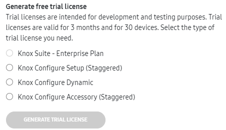
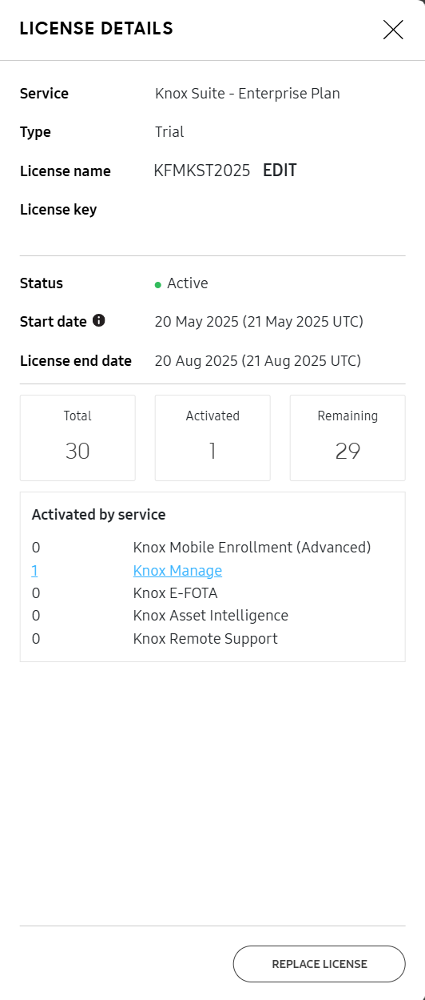

Manage Knox licenses
Last updated January 15th, 2025
The Knox Admin Portal offers a consolidated Licenses page to check your available license seats in one view. You can add, manage, and delete your Knox cloud service license keys on this page, and use one license for all your Knox Suite services.
- To add or remove license seats, contact your license reseller. Your reseller can also add new licenses to your tenant on your behalf.
- To learn more about Knox licenses, see Knox licenses under Fundamentals.
To see the consolidated licenses page, in the Knox Admin Portal navigation pane, click Licenses. You can also navigate to this page through the individual Licenses page in the console of each Knox service.

The license list includes Knox Suite Plans, Knox Manage, Knox E-FOTA, Knox Asset Intelligence, Knox Configure, and Samsung Care+ for Business licenses, and contains the following information:
| Field | Description |
|---|---|
| SERVICE/TYPE | The Knox service the license is for, and, if applicable, the type of license. |
| LICENSE NAME | The human-friendly name given to the license. |
| STATUS | The license status, as defined by the service the license is for. |
| TOTAL | The total number of seats on this license. |
| ASSIGNED | The number of devices that have a license seat assigned to them, but have not yet activated the seat. This column is only available if your enterprise is registered for a service that supports license assignments. |
| ACTIVATED | The number of devices that are successfully enrolled in the service. Click the number to see a filtered list of devices in that service’s console. |
| REMAINING | The number of license seats available, calculated by subtracting the activated and assigned seats from the total number of seats on the license. |
| END DATE | The date the license expires, after which new devices can’t be enrolled with this license and the service period ends. For staggered licenses, the activation or assignment end date represents the last day that seats can be activated on that license. After that date, the license cannot be assigned or activated on devices even if there are seats remaining, but currently enrolled or activated devices remain so for the rest of the service period. |
In the search bar above the license list, you can search for a license name or key. The list updates to show all licenses that partially or fully match your search query.
Get a license
Click ACTIONS > Get a license to view the different ways you can obtain a Knox license. Select from the following options:
| Action | Result |
|---|---|
| GENERATE TRIAL LICENSE | Intended for testing purposes, a trial license is valid for 3 months and supports up to 30 devices. You can select which type of license to generate the trial key for. |
| FIND RESELLER | Opens a list of Knox resellers in your region who you can purchase a commercial license from. After you purchase a license, your reseller can add it to your tenant for you. |
| GENERATE LICENSE for Enterprise Edition devices | Opens your Enterprise Edition license dashboard to generate a Knox Suite - Enterprise Plan license key.
|
| GENERATE LICENSE for Special Edition device bundles in the US region | Opens the Special Edition license dashboard to generate license key for a Knox Suite Plan.
|
Generate a free trial license
If you don’t have a Knox license already, you can generate a free trial license to test out Knox services. These licenses are valid for 3 months and support up to 30 devices. If your trial license expires, you can generate a new one.
You can get a trial license for:
- Knox Suite - Enterprise Plan. This includes Knox Mobile Enrollment, Knox Manage, Knox E-FOTA, Knox Asset Intelligence, Knox Remote Support, Knox Platform for Enterprise, Knox Capture, and Knox Authentication Manager.
- Knox Configure Setup (Staggered)
- Knox Configure Dynamic
- Knox Configure Accessory (Staggered)
To find out more about Knox Configure license types, see Manage licenses.
To generate a free trial license:
-
Click ACTIONS > Get a license.
-
In the Get a license dialog, select the type of trial license you want to generate.

-
Click GENERATE TRIAL LICENSE.
The Licenses page automatically updates to show your new trial license. Click the license name to display its details. You can see the start and end date of the license, edit its name, and more.
Enter a license key
To enter a license key that you’ve obtained:
-
Click ACTIONS > Enter license key.
-
A dialog prompts you for a friendly license name and the license key. Once you enter a valid license key, its corresponding license information shows underneath.

-
Click ADD to confirm the license addition to your account.
The Licenses page automatically updates to show your license. If you’re registering a license that has an activation date in the future, a notification alerts you that the license can be assigned to devices before the activation date, and the devices are only configured and enrolled in the respective service or services once the license is active.
Assign a license
This action is only available for Samsung Care+ for Business licenses. To assign a Samsung Care+ for Business license:
- Click Actions > Assign license.
- In the Assign license dialog, select the devices you want to assign to the license.
- Click ASSIGN.
Replace a license
As your organization’s requirements change, you may need additional license seats or decide to use a Knox Suite Plan that provides access to more services. In such cases, you can simply replace your existing license with a new one, provided that at least one common service is supported by both licenses.
License replacement is available for the following Knox Suite Plans and services, and is subject to conditions:
- Knox Suite - Enterprise Plan
- Knox Suite - Essentials Plan
- Knox E-FOTA
- Knox Asset Intelligence
- Knox Configure
When you switch to a new Knox Suite Plan, the license seats of only the services included in the new plan are affected. Other, previously active services are not affected. For example, replacing the Knox Suite Enterprise Plan with the Knox Suite Essentials Plan affects the license seats related to only Knox Manage and Knox Remote Support.
To replace a license:
- Click Actions > Replace license. The Select License page opens and displays a list of active licenses available for replacement. This list varies depending on each service’s licensing logic.
- Select a Knox Suite Plan to replace your current license.
- Click DONE. A notification displays information about the seats affected by the change.
Unenroll a device to release its license seat
Typically, when you unenroll a device from a Knox Suite Plan, Knox Configure, or Knox Guard, its associated license seat is released. The released license seat is then added back to the number of available seats on your license and can be used to enroll other devices.
Refer to the following table to learn more about how to unenroll devices for each Knox cloud service:
| Knox service | Type | Supported licenses |
|---|---|---|
| Knox Mobile Enrollment (Advanced settings) | Cloud-based | Knox Suite - Enterprise Plan |
| Knox Manage | Cloud-based | Knox Suite - Enterprise Plan, Knox Suite - Essentials Plan, Knox Manage standalone license |
| Knox E-FOTA | Cloud-based | Knox Suite - Enterprise Plan, Knox E-FOTA standalone license |
| Knox Asset Intelligence | Cloud-based | Knox Suite - Enterprise Plan, Knox Asset Intelligence standalone license |
| Knox Remote Support | Cloud-based | Knox Suite - Enterprise Plan, Knox Suite - Essentials Plan |
| Knox Capture | App | Knox Suite - Enterprise Plan |
| Knox Authentication Manager | App | Knox Suite - Enterprise Plan |
Other Knox cloud services not included in Knox Suite:
| Knox service | Type | Supported licenses |
|---|---|---|
| Knox Configure | Cloud-based | Knox Configure standalone license |
| Knox Guard | Cloud-based | Knox Guard standalone license |
Additionally, to understand how to resolve license seat count issues when enrolling devices into a service, see this knowledge base article.
Delete a license
If you have an old or expired license that you no longer need, you can choose to delete it from the licenses list. You won’t be able to delete licenses that are currently in use or have activated devices associated with them.
Only admins with the license management permission can delete licenses, and all deletions are recorded in the activity log.
License deletion is irreversible.
To delete a license:
- Ensure there are no devices associated with the license.
- In the license list, click a license name to open its details.
- In the bottom-right corner of LICENSE DETAILS, click > Delete license.
If you have the required license management permission but the Delete license option is unavailable, one or more of your services may have conditions preventing you from deleting the license. Make sure all devices associated with the license are unenrolled first, and refer to the respective service’s license documentation for more information.
View license information
In the license list, click a license name to open its details. In LICENSE DETAILS, you can find general information about the service, type, name, and owner. Details about its status, start and end dates, and seat counts are also available. For Knox Suite licenses, a further seat activation breakdown by service is available under Activated by service, which shows the number of licenses in use for each service. Clicking a number opens the common device list in the Knox Admin Portal and displays a list of all devices enrolled in that service.

Manage other Knox licenses
If you have Knox Platform for Enterprise or Knox Mobile Enrollment Direct license keys, you can also manage these in the Knox Admin Portal. To do so:
-
In the OTHER KNOX LICENSES block on the Licenses page, click Manage license keys.
The Other License Keys page opens with a list of the Knox Platform for Enterprise and Knox Mobile Enrollment Direct license keys you have.
-
On this page, you can:
- Check your license details for Knox Platform for Enterprise
- Deactivate devices from a license
- Check the status of devices associated with your license
To check the status of devices associated with your Knox Platform for Enterprise license:
- Under Device Management, click Device Status.
- Enter your Knox license key. Then, enter a list of the device IMEIs you want to check, or upload a CSV file with the IMEIs you want to check. You can also download a template for the file.
- After entering your license and device IMEI information, click CHECK STATUS.
For more information about other Knox licenses, see:
- Generate or renew a Knox Platform for Enterprise license
- Get a Knox Suite license for Enterprise Edition devices
Manage other Knox licenses as an MSP
If you’re an MSP admin, you have the ability to manage Knox Platform for Enterprise licenses on behalf of your customers. You can:
- Generate Knox Platform for Enterprise Premium license keys
- Renew Knox Platform for Enterprise Premium license keys
On this page
Is this page helpful?